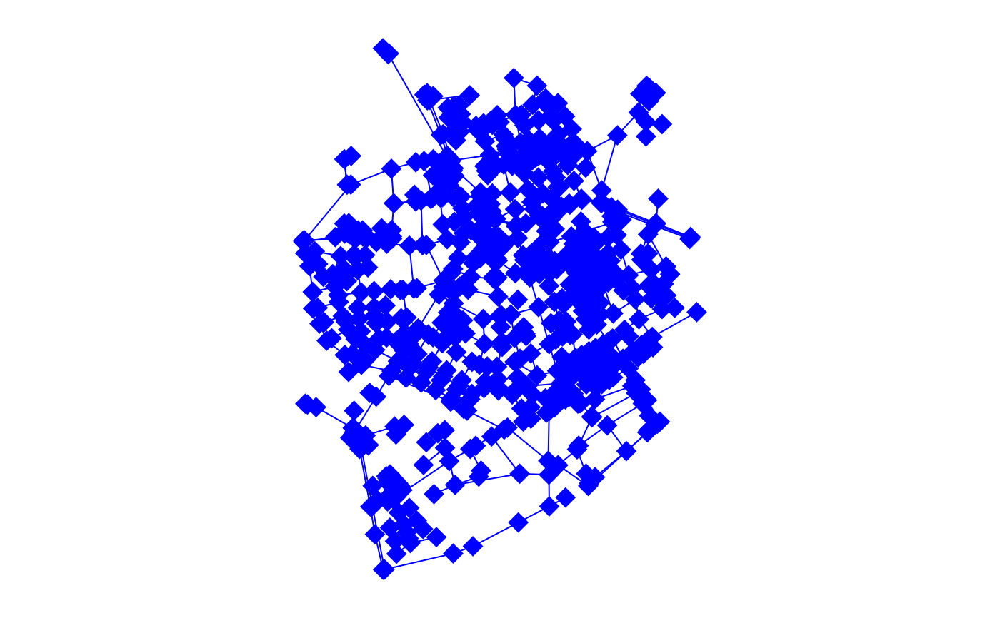
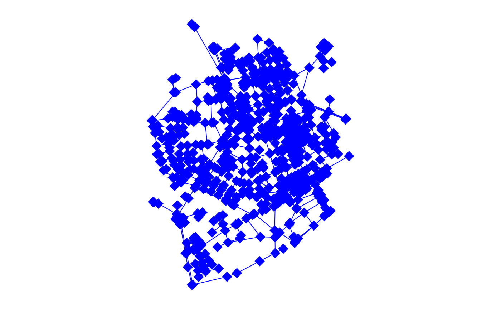

Plot the geometries of an object of class sfnetwork.
Arguments
- x
Object of class
sfnetwork.- draw_lines
If the edges of the network are spatially implicit, should straight lines be drawn between connected nodes? Defaults to
TRUE. Ignored when the edges of the network are spatially explicit.- node_args
A named list of arguments that will be passed on to
plot.sfonly for plotting the nodes.- edge_args
A named list of arguments that will be passed on to
plot.sfonly for plotting the edges.- ...
Arguments passed on to
plot.sfthat will apply to the plot as a whole.
Details
Arguments passed to ... will be used both for plotting the
nodes and for plotting the edges. Edges are always plotted first. Arguments
specified in node_args and edge_args should not be specified
in ... as well, this will result in an error.
Examples
library(sf, quietly = TRUE)
oldpar = par(no.readonly = TRUE)
par(mar = c(1,1,1,1), mfrow = c(1,1))
net = as_sfnetwork(roxel)
plot(net)
 # When edges are spatially implicit.
# By default straight lines will be drawn between connected nodes.
par(mar = c(1,1,1,1), mfrow = c(1,2))
inet = st_drop_geometry(activate(net, "edges"))
plot(inet)
plot(inet, draw_lines = FALSE)
# When edges are spatially implicit.
# By default straight lines will be drawn between connected nodes.
par(mar = c(1,1,1,1), mfrow = c(1,2))
inet = st_drop_geometry(activate(net, "edges"))
plot(inet)
plot(inet, draw_lines = FALSE)
 # Changing plot settings.
par(mar = c(1,1,1,1), mfrow = c(1,1))
plot(net, main = "My network", col = "blue", pch = 18, lwd = 1, cex = 2)

# Changing plot settings for nodes and edges separately.
plot(net, node_args = list(col = "red"), edge_args = list(col = "blue"))
# Changing plot settings.
par(mar = c(1,1,1,1), mfrow = c(1,1))
plot(net, main = "My network", col = "blue", pch = 18, lwd = 1, cex = 2)

# Changing plot settings for nodes and edges separately.
plot(net, node_args = list(col = "red"), edge_args = list(col = "blue"))
 # Add grid and axis
par(mar = c(2.5,2.5,1,1))
plot(net, graticule = TRUE, axes = TRUE)
# Add grid and axis
par(mar = c(2.5,2.5,1,1))
plot(net, graticule = TRUE, axes = TRUE)
 # Plot two networks on top of each other.
par(mar = c(1,1,1,1), mfrow = c(1,1))
neta = as_sfnetwork(roxel[1:10, ])
netb = as_sfnetwork(roxel[50:60, ])
plot(neta)
plot(netb, node_args = list(col = "orange"), add = TRUE)
# Plot two networks on top of each other.
par(mar = c(1,1,1,1), mfrow = c(1,1))
neta = as_sfnetwork(roxel[1:10, ])
netb = as_sfnetwork(roxel[50:60, ])
plot(neta)
plot(netb, node_args = list(col = "orange"), add = TRUE)
 par(oldpar)
par(oldpar)